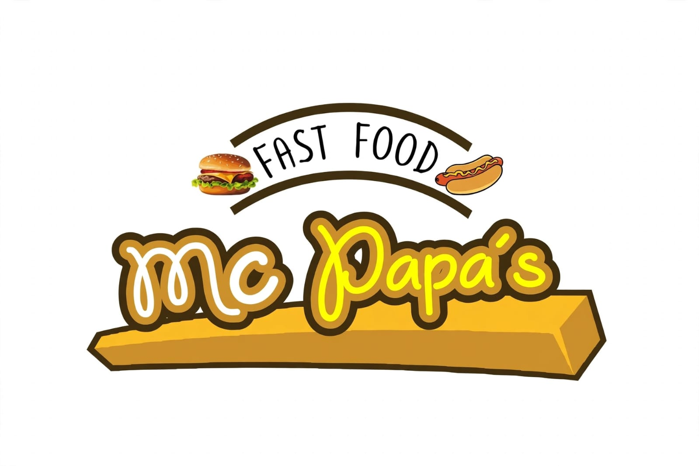

NOSOTROS
Sobre Nosotros - Nuestra Historia
Nuestra Historia
En MC PAPAS Fast Food todo nacio desde una idea simple: Hacer las mejores papas de Jujuy. Inicio en 2019 como un pequeño emprendimiento familiar en Libertador, al dia de hoy somos el punto de encuentro de todos aquellos amantes de la comida rapida.
Usamos papas seleccionadas y el secreto de nuestra salsa cheddar casera, siempre buscando la mejor calidad para nuestros comensales. Cada pedido lo preparamos al momento, bien caliente y con mucho sabor.
Gracias por formar parte de esta gran familia!
